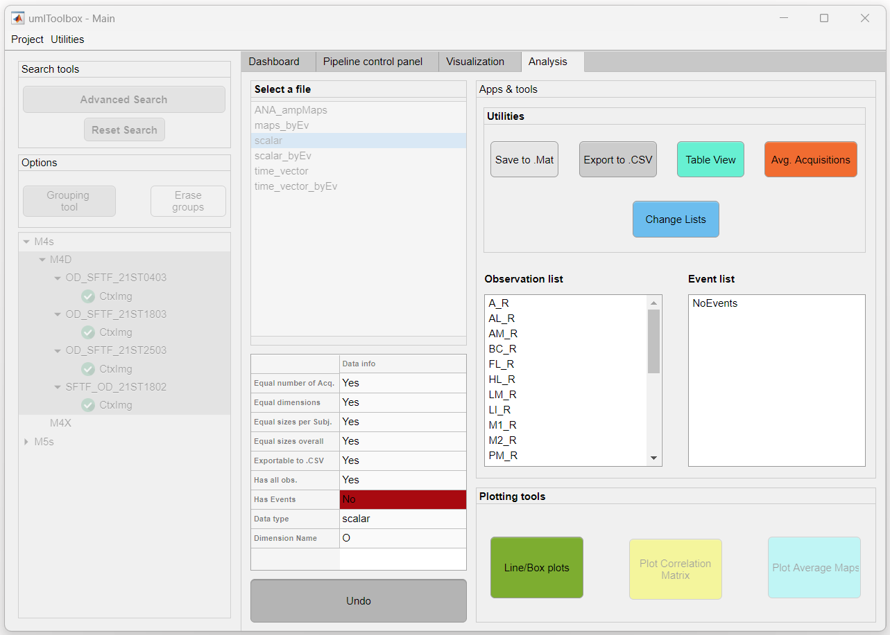

This tool averages the data across a number of consecutive acquisitions. For instance, in a longitudinal experiment design, one can perform a series of control recordings at the beginning of the experiment. This tool allows one to average these recordings and represent the data as a single control acquisition.
Important
This option is available only for experimental groups with the same number of acquisitions. For details on how to create experimental groups, click here.
Here, we illustrate how to average acquisitions with an example of a subject with four acquisitions where the two first acquisitions are a control. To have access to the Avg. Acquisition tool, first select the data and click on the Select button from the Analysis tab of the umIToolbox app. The data looks as so:

To average the first two acquisitions:
How to average two consecutive acquisitions. Note that the table in the umIToolbox app is updated with the name of the grouped acquisitions and their original indices
Note
If the grouped acquisitions contain the first one, the average will be considered a baseline.
To reset to the original acquisition list, simply open the tool and click on the Reset button.